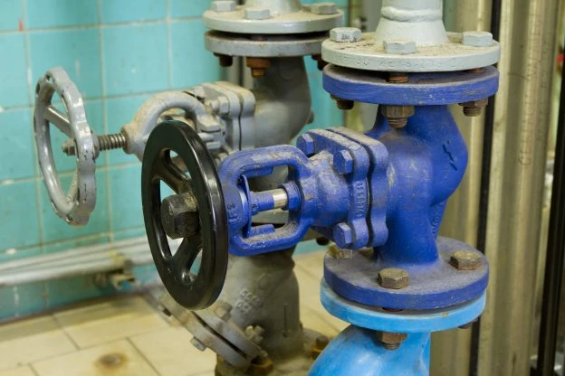
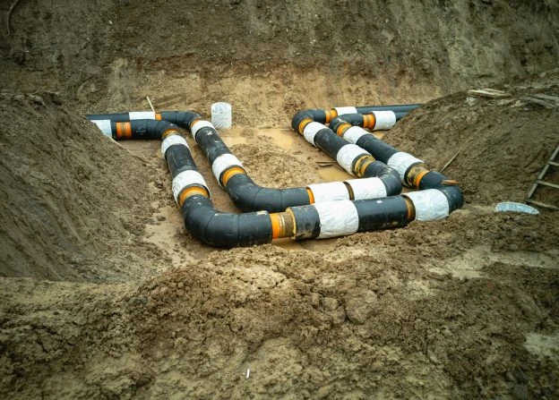
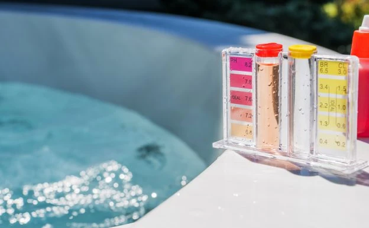
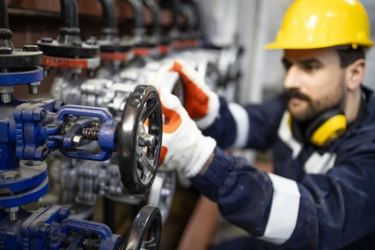
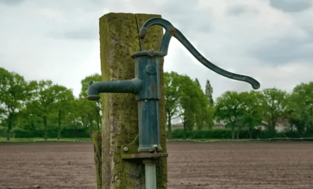
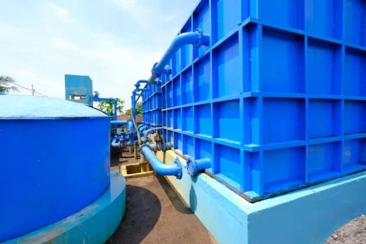

+ Como funciona uma bomba de água submersível e suas vantagens
A bomba de água submersível, como o próprio nome sugere, deve ser usada completamente dentro da água, incluindo bomba e motor. Desse modo, é.
Ler maisConfira as últimas notícias e dicas separadas pelos nossos especialistas.

A bomba de água submersível, como o próprio nome sugere, deve ser usada completamente dentro da água, incluindo bomba e motor. Desse modo, é.
Ler mais
A bomba de água é um equipamento perfeito para quem deseja enviar água de um local para outro. Independente se for para um lugar plano ou para um.
Ler maisA piscina é perfeita para relaxar, reunir a família e amigos para curtir aquele dia de sol, e até nos dias mais frios, no caso das aquecidas.
Ler mais
Com o surgimento dos grandes centros, as chances de ocorrer enchentes aumentaram. Algo muito comum nos períodos de chuvas, como em janeiro, por.
Ler maisAs NRs (Normas Regulamentadoras) se tratam de regras que visam a prevenção de doenças e acidentes no ambiente de trabalho. Existem as gerais que.
Ler maisUm contrato de manutenção se trata de um documento com todas as informações sobre os serviços que serão prestados pela empresa ao cliente.
Ler mais
A bomba sapo é um tipo de bomba submersa vibratória que é usada totalmente dentro da água. Essa vibração significa que um eletroímã atrai e.
Ler mais
A bomba submersa, também conhecida como bomba palito, pode ser utilizada em diversas aplicações. Um dos pontos importantes para se atentar é que.
Ler maisA bomba vibratória, também conhecida como bomba sapo, deve ser usada dentro da água e pode ser usada em diversas aplicações. Para aqueles que.
Ler mais
Ter uma piscina em casa é perfeito para reunir os amigos e a família. Em dias de sol ela é ideal para se refrescar, mas nos dias de frio ela.
Ler mais